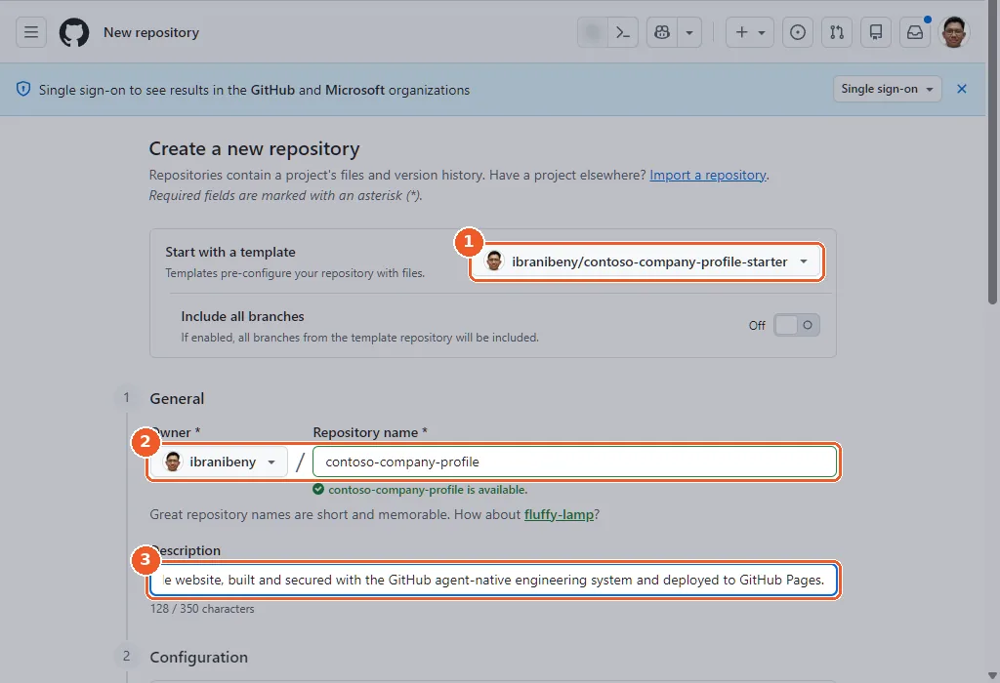
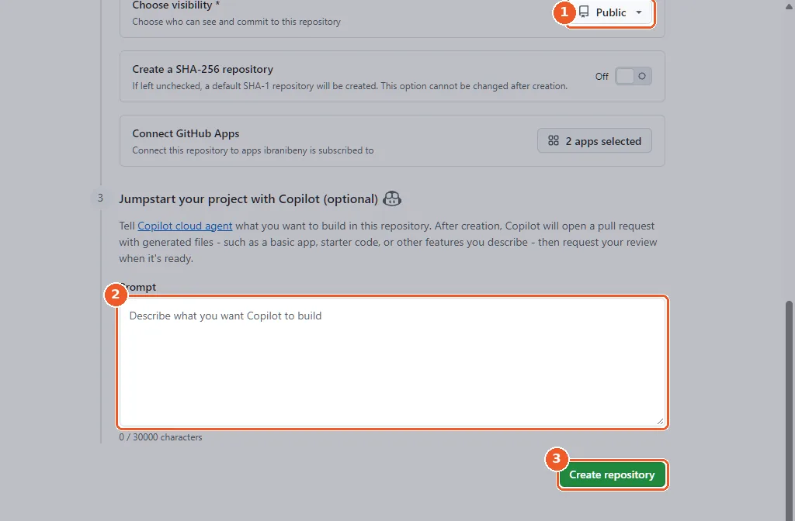
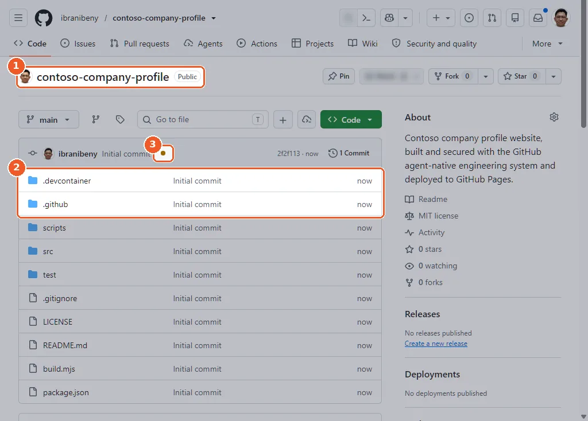
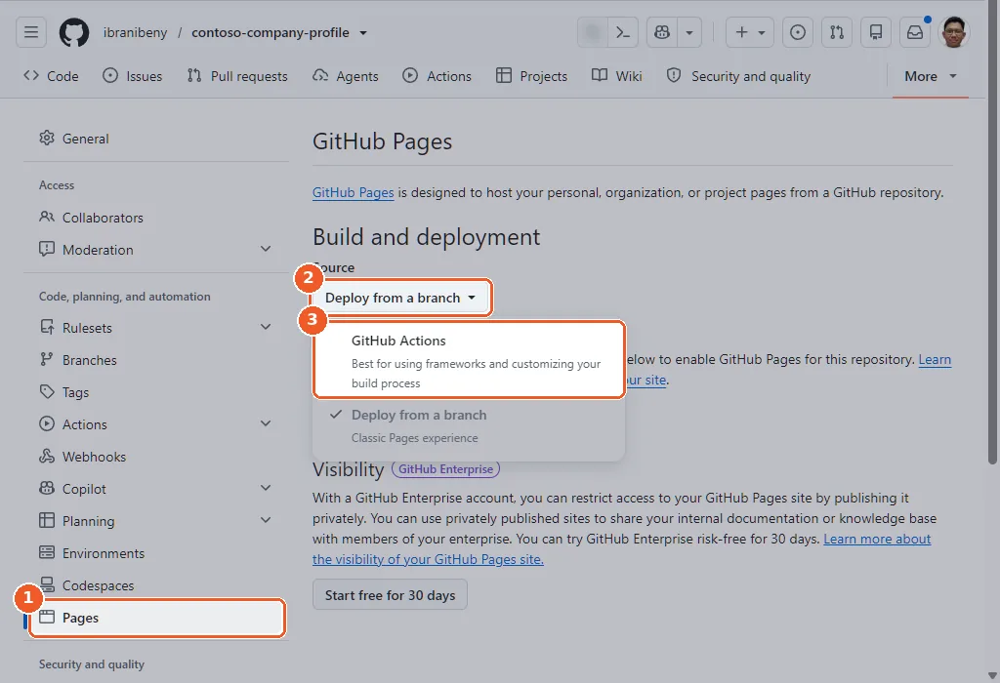
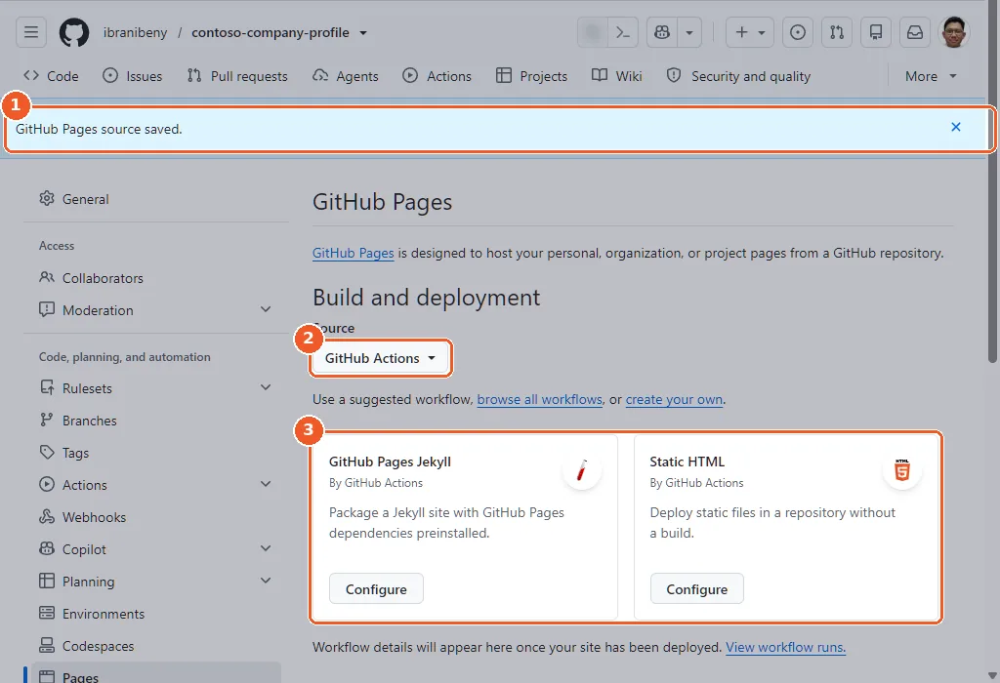
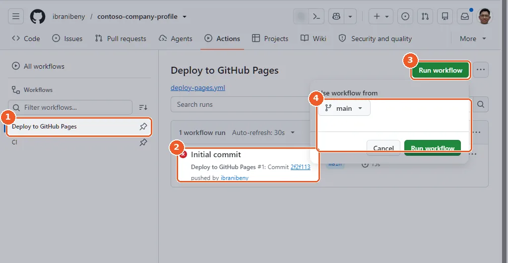

Chapter 1 · Monday 09:00 · about 20 minutes
Prepare the GitHub repo
Create Contoso's repository from the starter template, publish it with GitHub Pages and get the first deployment green. Everything happens in the browser.
Daniel drops a link in the team chat: the platform team's starter template, with the site, tests, a Pages workflow and a dev container already in it.
“Make it ours and put it on the internet before lunch. Public repo, so everyone can see the work, and so we get GitHub's security features for free on it.”
You open the link.
You will
Create a public repository from a template, set GitHub Pages to deploy with GitHub Actions and publish the site.
You need
A GitHub account. Nothing to install.
You get
A live site at https://<your-account>.github.io/contoso-company-profile/.
Create your repository from the starter template
- Open the starter template: https://github.com/ibranibeny/contoso-company-profile-starter.
- Select Use this template → Create a new repository.
- Owner: your account. Name:
contoso-company-profile. Visibility: Public. - Select Create repository.

- 1Open the starter template repository and select Use this template.
- 2Choose Create a new repository so the code lands in a repository you own (Open in a codespace would skip that).


- 1The template is already selected. Leave Include all branches off: you only need main.
- 2Pick your account as owner and name the repository contoso-company-profile. GitHub confirms the name is available.
- 3Add a short description (optional).


- 1Set visibility to Public. GitHub Pages, code scanning, secret scanning and Dependabot are all free for public repositories.
- 2Leave the Copilot prompt empty: the template already brings the starter code.
- 3Select Create repository.
Same thing with the GitHub CLI:
gh repo create contoso-company-profile --public \
--template ibranibeny/contoso-company-profile-starter --cloneWhy it matters: A template gives every participant an identical, clean history in a repository they own, which is what the security features in Chapters 5 to 7 need. Public matters: GitHub Pages, CodeQL code scanning, secret scanning, push protection and Dependabot cost nothing on public repositories.
Look around your new repository
The template arrives as one Initial commit. Take a minute to see what you own now: a static site built with Node.js and EJS templates, tests, two workflows and a dev container. Notice the Actions indicator: the deployment already tried to run.


- 1Your new public repository with the starter code in one Initial commit.
- 2.devcontainer configures Codespaces; .github holds the CI and Pages workflows plus the Copilot instructions.
- 3The Pages deployment workflow starts immediately. Its first run fails because Pages is not enabled yet: you fix that next.
Repository layout:
contoso-company-profile/
├── .devcontainer/devcontainer.json Node.js 22 + GitHub CLI for Codespaces
├── .github/
│ ├── copilot-instructions.md house rules Copilot follows in this repo
│ └── workflows/
│ ├── ci.yml tests every pull request
│ └── deploy-pages.yml builds and publishes to GitHub Pages
├── src/
│ ├── data/site.json, news.json all copy and company data
│ ├── pages/*.ejs index, solutions, about, news, contact
│ ├── partials/*.ejs head, header, footer, page-hero, icon
│ └── assets/ css, js, img (logo + photos)
├── test/site.test.mjs checks run by npm test
├── scripts/serve.mjs local preview on port 8080
├── build.mjs renders src/pages into dist/
└── package.json scripts: build, test, serve.github/copilot-instructions.md holds the house rules (content in JSON, escape EJS output, never put user input into innerHTML, one h1 per page, tests for every new page). Copilot CLI, Copilot code review and the cloud agent all read it.
Why it matters: Knowing where content, templates and workflows live is what lets you write precise prompts for Copilot later.
Switch on GitHub Pages with GitHub Actions
- Open Settings → Pages.
- Under Build and deployment, set Source to GitHub Actions.
- Ignore the suggested workflows: the template already includes one.


- 1Open Settings, then Pages.
- 2Under Build and deployment, open the Source menu.
- 3Choose GitHub Actions. The deploy-pages.yml workflow from the template builds the site and publishes it.


- 1GitHub confirms the change: GitHub Pages source saved.
- 2The source is now GitHub Actions.
- 3Skip the suggested workflows: the repository already ships .github/workflows/deploy-pages.yml.
Same thing through the REST API:
gh api -X POST repos/{owner}/contoso-company-profile/pages -f build_type=workflowWhy it matters: With GitHub Actions as the source, the site is built by a workflow you control and can test, instead of being served straight from a branch.
Run the deployment
The first run failed because Pages was still off when the repository was created. That is expected. Run it again:
- Open Actions → Deploy to GitHub Pages.
- Select Run workflow, keep branch
main, and confirm. - Wait about 30 seconds for both jobs, build and deploy, to turn green.


- 1Go to Actions and pick the Deploy to GitHub Pages workflow.
- 2Run #1 failed on the Initial commit because Pages was still disabled. Expected.
- 3Select Run workflow (the workflow has a workflow_dispatch trigger).
- 4Keep branch main and confirm with Run workflow.

- 1Run #2 of Deploy to GitHub Pages is green.
- 2Status Success, 34 seconds end to end.
- 3build installs dependencies, runs the tests and renders dist/; deploy publishes it to GitHub Pages.
- 4Note the warning: some actions still target Node.js 20. Dependabot fixes that in Chapter 6.
.github/workflows/deploy-pages.yml, exactly as shipped in the template:
name: Deploy to GitHub Pages
on:
push:
branches: [main]
workflow_dispatch:
permissions:
contents: read
pages: write
id-token: write
concurrency:
group: pages
cancel-in-progress: false
jobs:
build:
# Skip in the template repository itself; run in every repository created from it.
if: ${{ !github.event.repository.is_template }}
runs-on: ubuntu-latest
steps:
- uses: actions/checkout@v4
- uses: actions/setup-node@v4
with:
node-version: 22
- name: Install dependencies
run: if [ -f package-lock.json ]; then npm ci; else npm install --no-audit --no-fund; fi
- name: Test
run: npm test
- name: Build
run: npm run build
- uses: actions/configure-pages@v5
- uses: actions/upload-pages-artifact@v3
with:
path: dist
deploy:
needs: build
runs-on: ubuntu-latest
environment:
name: github-pages
url: ${{ steps.deployment.outputs.page_url }}
steps:
- id: deployment
uses: actions/deploy-pages@v4The is_template condition keeps the workflow quiet in the template itself and lets it run in every copy. Re-run and follow it from the terminal with:
gh workflow run deploy-pages.yml
gh run watchWhy it matters: From now on every push to main tests, builds and publishes the site automatically. The Node.js 20 warning on the run is real technical debt; Dependabot pays it off in Chapter 6.
Check the live site
Open the URL shown on the run summary or under Settings → Pages. You should see Contoso Technology Solutions, an IT solution provider, with five pages: Home, Solutions, About us, Newsroom and Contact.

- 1Contoso Technology Solutions, a fictional IT solution provider, with its own logo and a 24/7 service-desk bar.
- 2Five pages built from EJS templates: Home, Solutions, About us, Newsroom and Contact.
- 3Every text block comes from src/data/site.json, so content changes never touch layout code.
- 4The hero photo of the Contoso headquarters is an AI-generated image stored in src/assets/img.
Preview locally (in the codespace you open in Chapter 2):
npm run build && npm run serve # http://localhost:8080Why it matters: A visible result in the first 20 minutes. Everything after this improves the same site through the agentic SDLC.
Checkpoint
https://<your-account>.github.io/contoso-company-profile/. The real run: ibranibeny/contoso-company-profile → live site.You post the link. Daniel replies with a thumbs-up. Lina, Chief People Officer, replies a minute later:
“Looks great! We are hiring 120 engineers next year and I need a Careers page on it. I will raise a request.”
Daniel: “Perfect timing. Before Lina's request lands, let's put an agent on triage.”